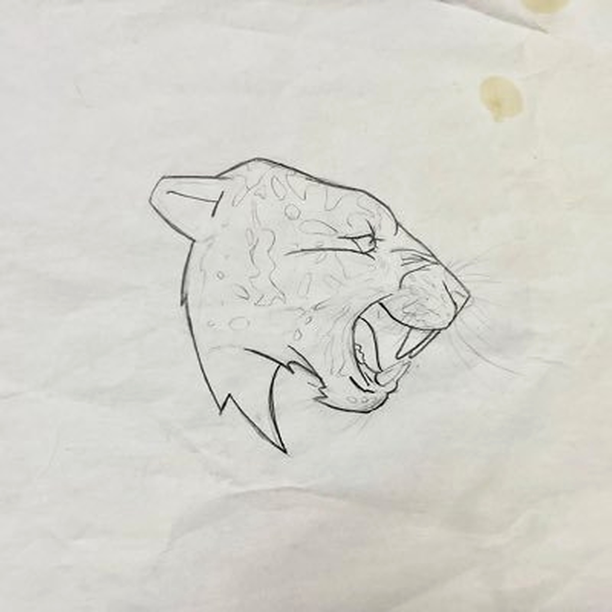

BEAST ARTIFACT
The Origin Point
Beast Artifact is a community-centered digital asset built around a single, physical relic: the original pencil sketch where a now-unmistakable beast first took shape.
The coin does not represent the artifact. It exists to protect the story around it, power the community that discovered it, and eventually determine who will carry it forward.
A single sheet of aged paper bearing a pencil sketch of a roaring beast, frozen mid-snarl. The silhouette, the eyes, the expression — instantly recognizable.
This is not a recreation. It is not fan art.
It is the origin point.
Creases from being folded and hidden.
Stains from unknown moments in its journey.
Worn edges from time and survival.
Every mark is part of its story. The lines can be examined. The proportions match. The history holds up.
The artifact surfaced because the person holding it is the same person who first created it.
Years ago, before the beast became a symbol, the explorer drew it. Not for an audience. Not for a brand. Simply as an idea — pencil meeting paper, instinct guiding hand.
When the explorer returned to the sketch, the recognition was unavoidable. The proportions. The snarl. The unmistakable silhouette.
The same lines that would later be refined, digitized, and repeated at global scale were already there.
The proof was already in his possession.
The artifact is currently held by a nameless explorer — a guide, not an owner.
Does not sell. Does not promise outcomes. Does not claim credit.
Their role: protect the artifact until the community it belongs to reveals itself.
This project has no audience. Only believers.
Every reply, share, theory, and act of attention strengthens the story.
The community does not watch the story. They power it.
Discovery — The artifact is revealed.
Awakening — Its influence becomes undeniable.
The Hunt — Shadows close in.
Revelation — The purpose becomes clear.
The Transfer — One community member is chosen.
The artifact will leave the explorer. That promise will be kept.
"If you feel something reading this, stay close.
The paper remembers."
A single sheet of aged paper bearing a pencil sketch of a roaring beast, frozen mid-snarl. Instantly recognizable to anyone familiar with the creator economy.
The lines can be examined. The proportions match. The history holds up.
The artifact is revealed. A single pencil sketch, hidden for years, resurfaces. The origin point is recognized.
Its influence becomes undeniable. The community forms. Believers gather. Moments of unexplained alignment begin.
Shadows close in. The story intensifies. The artifact draws attention from those who understand what it means.
The artifact's purpose becomes clear. What was hidden is now understood. The truth reveals itself.
One community member is chosen. The artifact will leave the explorer. That promise will be kept.
A story anchored to a real object. No hype. No manufactured urgency. Just truth on paper.
No promises of outcomes. No endorsements. No claims beyond what the artifact itself reveals.
Engagement is not consumption — it is participation. Every act of attention strengthens the story.
Artifacts disappear when locked away. This one refuses. It insists on being seen. It insists on being believed.
"If you feel something reading this, stay close.
The paper remembers."
What happens next depends on the community. The artifact insists on ending up exactly where it began — with the people who recognize it.